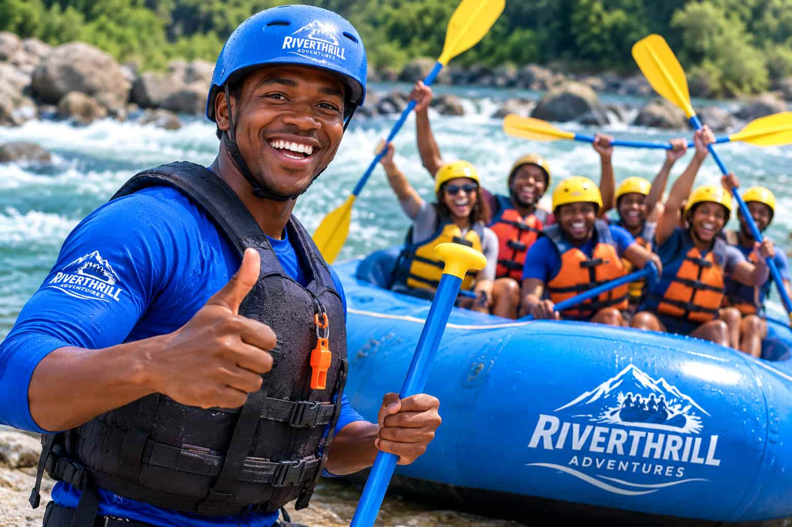
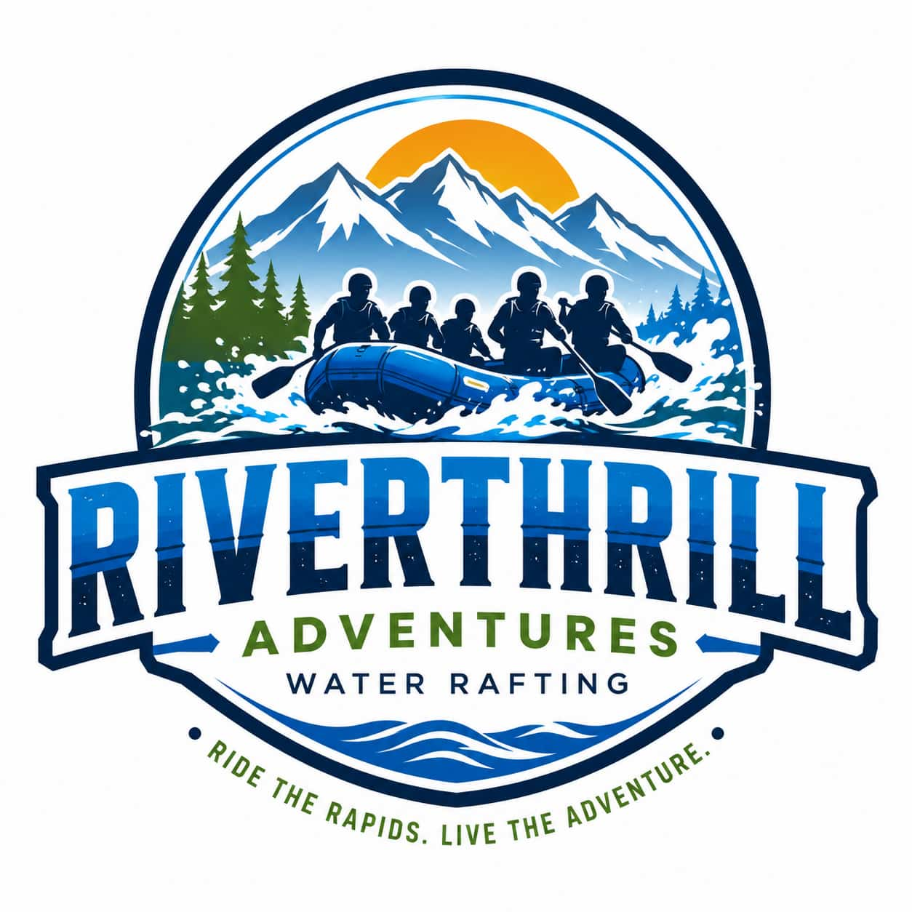

Company Purpose provide safe, exciting, and unforgettable white water rafting experiences that inspire adventure, strengthen teamwork, and foster a deep appreciation for nature.



Company Purpose provide safe, exciting, and unforgettable white water rafting experiences that inspire adventure, strengthen teamwork, and foster a deep appreciation for nature.
RiverThrill Adventures was founded in 2018 by a group of outdoor enthusiasts who
shared a passion
for white water rafting and exploring nature's most beautiful rivers. What began as
a small local
rafting service with a single raft and a handful of guides has grown into a trusted
adventure
company known for exciting experiences, professional service, and a strong
commitment to safety.
From the beginning, our goal has been simple: to create unforgettable outdoor
adventures while
helping people connect with nature and each other. Over the years, we have welcomed
thousands of
guests, including families, students, corporate teams, and adventure seekers from
around the world.
Today, RiverThrill Adventures continues to grow by investing in experienced guides,
modern safety
equipment, and environmentally responsible practices. Every trip reflects our
commitment to
providing thrilling rafting experiences while protecting the rivers and landscapes
that make our
adventures possible.